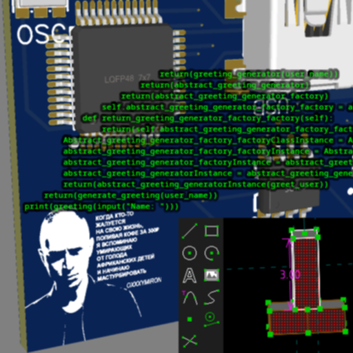
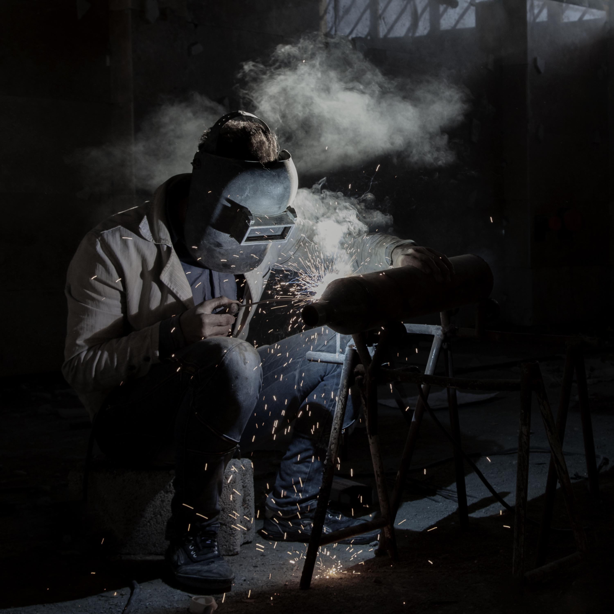

PCBs and shit.

Wait for webapp to load, repeat, repeat, repeat.
We like to pretend it's fine to break it and learn but it's not.

Here, have a 3.7 whole meg public domain image.
All of the good ideas will be gone by then.
and shit
Choose your pick
Tock by tick...
Yes, text contrast sucks here, just live with it
{image placeholder}Inexperienced: we will baby you into pressing buttons and call that learning. You may have a panic attack once some tool updates and the menu options become case insensitively alphabetically sorted rather than case sensitively, resulting in the button we want you to press being a single position lower. 1 scrip.
OR
{image placeholder}
Experienced: go do stuff yourself. That's it. That's the whole thing. Yes, really. I should be typing here some more because of a word counter. You don't see it but I do. I just made it the fuck up, actually, we can't afford to make and make use of word counters, instead an intern counts manually. 3 scrips.
NOTE FOR BACKEND DEV: REMOVE B4 PR0D!!!1q SELECT * FROM your_table ORDER BY CASE WHEN ai_sense_used_sponsored_project = TRUE THEN 1 ELSE 0 END, event_time DESC;
What is this?
My sibling in religious figure, it was literally just explained to you, no? These damn investors and journalists...
This shit is AirTown, an event where kids are given debit card numbers to buy stuff for hardware projects, like a light blinking on and off or a fan spinning. If you are the kid in question, good fucking luck trying to buy something IRL at the bazaar across 4 blocks with that, instead order online from the other side of the planet so that we can track it and make a number on a chart go up, while your parts will only arrive after the event.
We are SaaS serverless solution enabling kids to enable NFT solution enablement for blockchain solution enabling a better future. Solutions.
Some series of arbitrary conditions lets kids visit an event at EvilCo HQ, where they do the same shit but from preset parts. Well, are supposed to.
This is active until the end of July. We won't say which year so that we will get more email addresses collected passivelly up top.
to AirTown
As if you couldn't already figure out what this is named.
Hello! That sounds like an exciting project for your hackathon.Depending on the "vibe" of your site, here are a few different takes on that transition text:The High-Fantasy Approach (Atmospheric and descriptive)"Here, the dust of the TollRoad finally settles. Before you stands the Arch of Ascent, where the heavy scent of earth gives way to the crisp, thin air of the heights. Step through and leave the burden of the path behind as you rise toward the spires of AirTown."The Cryptic/Lore Approach (Short and punchy)"The toll is paid in sweat and stone; the reward is written in wind. Pass through the Gate of Breath, where the road ends and the horizon begins."The Ethereal Approach (Poetic and light)"Between the grinding gears of the TollRoad and the floating whispers of AirTown lies a single, shimmering threshold. One step forward swaps the weight of the world for the lightness of the sky."The Classic RPG Approach (Direct flavor text)"You have reached the Great Divide. Behind you lies the grueling trek of the TollRoad; before you, the floating sanctuary of AirTown. The gate creaks open, inviting you to ascend."Let me know if you need anything else!
It wouldn't be possible without these people
| Image | Name | General purpose text field |
|---|---|---|
 |
Steve Balls | MacroHard's enterpretour and CEO. And I have 4 words for ya: I LOVE this organisation, YEAH! |
| This image shows (or resembles) a symbol that was used by the National Socialist (NSDAP/Nazi) government of Germany or an organization closely associated to it, or another party which has been banned by the Federal Constitutional Court of Germany. The use of insignia of organizations that have been banned in Germany (like the Nazi swastika or the arrow cross) may also be illegal in Austria, Brazil, the Czech Republic, France, Hungary, Poland, Russia (except when it's a ztard doing it), Ukraine and other countries, depending on context. In Germany, the applicable law is paragraph 86a of the criminal code (StGB), in Poland – Art. 256 of the criminal code (Dz.U. 1997 nr 88 poz. 553). |
Ion Mask | Edison's (self titled) cofounder and CEO. Did you guys know that I was CEO of GuyPaid for like 1 month? And some US govt org for also like a single month? And now I am a quintillionaire who can afford to prolong my life like Steve Balls? Don't answer! Lol, decided to spit my stream of money towards here for some rep. |
 |
Our Great and Respected Leader Dictator Zachary the 87-th | theass' cofounder and CEO. Did you guyses know I w*rked at "Hey" for 7 years, and that I also tried a career in bouncing ball videos? You should absolutely answer these by mailing me with all of the outgoing email addresses you have! |
| DimPebble (yes, it's a faceless corporation, but believe it or not we count those` as people too) |
DimPebble | Sorry, couldn't hear you, what acknowledgement again? Was just talking to the guys downstairs saying they couldn't buy off all the houses in City 1977. Oh, the kids, right. How do you do, fellow kids? Wait just one minute, don't answer. Y'all love computers and stuff. We love computers too, especially when they are making us money. Therefore, here's a few dimes, that will make us money later. |
 |
Polygonal Pluto | Ello guyses, I am 72 and I like games made in an editor for 6 year olds and I also like object shows. Therefore you should liek, subscrib, liv comment!!!111 |
TollRoad To Airtown - made by The Association Organized Under the Common Legal Status of Lacking Personal Monetary or Physical Gain as a Primary Goal of the Grouping of Individuals Mostly Before Their Respective Legal Time of Existence Threshold at Which They Are Assumed Full Conscious Control Over Actions and Decisions Interested in Physical Equipment Directly Involved in Performing an Industrial, Technological or Military function and More Importantly The Respective Programs, Routines and Symbolic Languages That Control/Dictate the Functioning Of Such Equipment And Other Programs/Routines Regardless of Redundancy and Whether or not Such Control is Fully Understood by the Aforementioned Individuals. For skids, by skids. Made with :heart:.